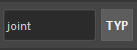
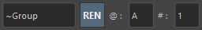

A tool to assist with selection and renaming operations.
This tool assists with selecting nodes in the scene and renaming operations.
Key features include:
Launch from the dedicated menu or the following command. The tool will dock at the bottom of the shelf.
import faketools.tools.selecter
faketools.tools.selecter.show_ui()
Filters selected nodes using regular expressions.

Selecting the .* icon on the left changes it to ^, and selecting the .* icon on the right changes it to $. Selecting the Aa icon distinguishes between uppercase and lowercase.
Hold the Ctrl key while selecting to deselect matching nodes.
Filters selected nodes by node type.

Hold the Ctrl key while selecting to deselect matching nodes.
Selects parent, child, or sibling nodes of the selected nodes.

All these options can use modifier keys similar to Maya's viewport selection.
Selects nodes by replacing names with those set in the tool.

Modifier keys can also be used, similar to Maya's viewport selection.
※ This feature can change the replacement method according to the settings of LEFT_TO_RIGHT and RIGHT_TO_LEFT in settings.json.
Replaces the names of selected nodes to execute selection, renaming, duplication, or duplicating original shapes.

Commands execute using strings entered in the respective text boxes. Press the → button to swap the replacement direction.

Changes the names of selected nodes.

@ are converted to alphabets. They are assigned in order of selection, starting with A. Change the first string using the @ field.# are converted to numbers. They are assigned in order of selection, starting with 1. Change the first number using the # field.~ are replaced with the names of the selected nodes.Special functions are available by pressing the respective buttons.